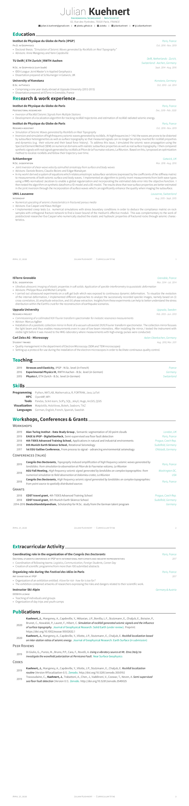

<section id="one" >
    <div class="container">
        {% for post in site.posts limit:1 %}
	    <article>
		<section class="post-content">
        	<p>See my CV below or download it with this <a href="{{ site.baseurl }}/cv/CV.pdf">link</a>. </p>
		
		<!-- <embed src="CV.pdf" width="800px" height="2100px" /> -->
            	</section>
	    </article>
	{% endfor %}
    </div>
</section>
